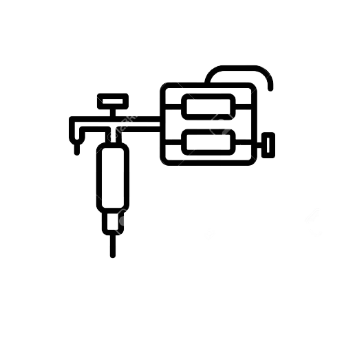

Welcome to the new German Ink art of Erbil.
Fashion, art, creativity can be everything – but if you love colors, your skin and to be more individual – you are absolutely right in our temple of creation!
Our Artist are guest artist in Germany and come from all over the world.
Its our pleasure to have them also here in Erbil now!!
We want to introduce this amazing professional tattoo artists
Consultation
We offer you a wide selection of highly specialized artists in various styles.
Of course, there is also an expert for your request.
So that you land in the right hands, you will consult with your tattoo wish and our available artists and arrange an appointment together with you.
By the way: Due to our first-class network, we always have short-term top artists available for you.
Meeting
Your chosen artist prepares an individual design in advance for you and will discuss this with you at the beginning of your appointment, there is also time for change requests.
In preparation for your appointment you will receive from us a leaflet, which provides you with all the necessary and noteworthy information,
so that the appointment runs as best as possible fo
you.
Tattoo
In our studio we work exclusively with professional equipment and disposable materials for a hygienic environment.
Our in-house, strict hygiene controls ensure maximum safety for you and your health.
In addition, we also offer you professional products for the aftercare of your fresh tattoo.
Care is important for first-class result
CONTACT US
Feel free to contact us by mail (info@artgermanink.com)